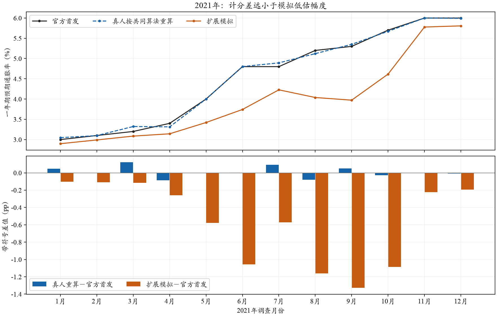
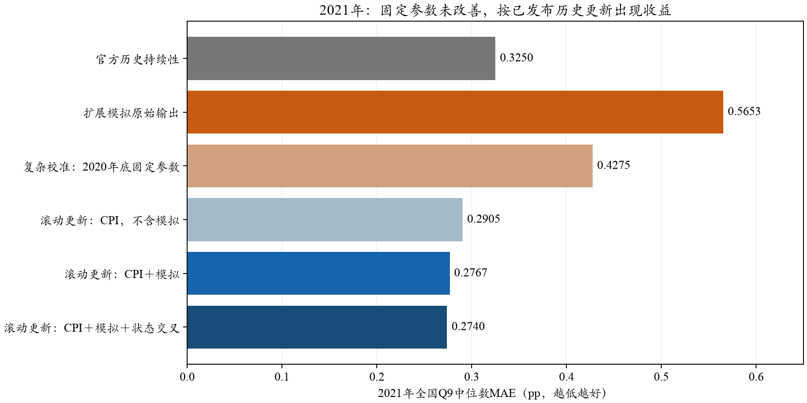
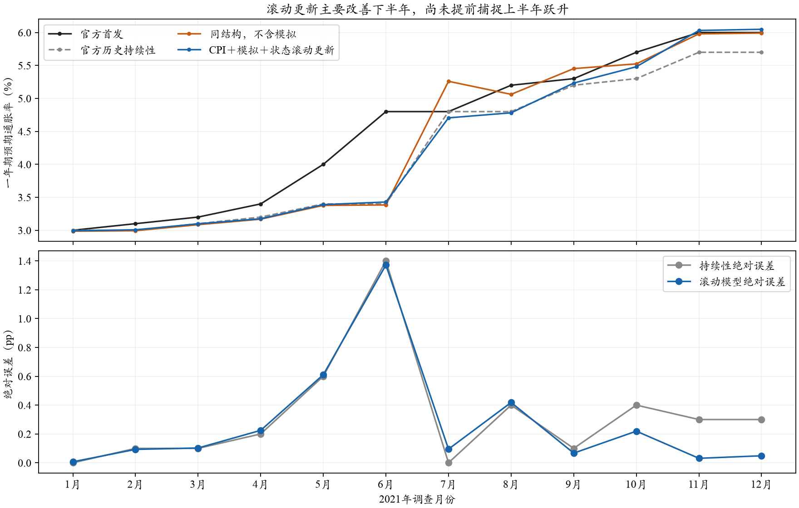

SCE · 82月计分对账／2021年专项 · 0新增API／0密度重拟 · 原结果保留
2021年低估不是计分差造成的；动态统计校准出现局部收益
同人、同权重对账后，密度拟合对月度中位数的平均差约0.0133pp，2021年约0.0238pp。2021年预先固定参数仍不如持续性；按已公布历史逐月更新后，扩展模拟＋CPI＋状态交叉MAE为0.2740pp，对照0.3250pp。收益主要来自下半年，不称提前预测了通胀跃升，也不自动升级主配置。
1．正式报告应如何声明计分差异
全国主目标采用纽约联储官方首发值，微观比较对真人和模型共同使用冻结近似计分器。本项目已实现官方公开的均匀、相邻双档三角、广义Beta规则；现有冻结版还包含2026-10-03独立计分留出选定的Beta改进，不是最早的原始版本。部分开放尾Beta的约束、起点与多解选择仍未完全还原官方实现。
本次另读取官方提供的个人Q9_mean，仅在评价层与同一条真人记录的本地评分比较。共同有效记录96,655条：加权个人均值绝对差约0.0310pp；均匀分支为0，双档三角近浮点精度，闭合Beta约0.0004，开放尾Beta约0.0662pp。个人误差与跨人中位数误差是不同统计量。
只换个人密度均值、固定同一批人和权重：82个月的月度中位数平均绝对差为0.013272pp，2021年为0.023813pp。样本纳入改变另列，不混进纯密度差。
只用官方个人均值＋原调查权重＋当前经验CDF中位数：82个月均复现高精度官方chart，平均差约1.5×10⁻¹⁶pp。说明这批Q9的汇总层已对齐，不需要为修复2021而更换中位数规则。Cox对称插值已按公开公式另实现作敏感性；用于此Q9后官方字段与chart平均差约0.0031pp，故不替换原口径。该插值主要针对取整/分组回答，不能不加区分套到所有变量。

上图单位%；下图单位pp。差值均逐月计算，不将不同来源平均绝对差相加作贡献比例。来源：冻结问卷评分、官方个人派生字段、原权重、chart与首发目标。
2．模型误差中，多少是计分差？
令S为模拟中位数、H为真人共同算法重算值、O为官方值，则 S−O＝(S−H)＋(H−O)。这是带符号误差的精确分解；MAE含绝对值，不能把0.0269÷0.2984当“算法造成的误差比例”。
原Core对官方MAE为0.298407pp，对同算法真人值为0.289976pp，净差0.008431pp，约2.8%，只表示换对照目标的敏感性。2021年方向反过来：官方目标0.577424、同算法目标0.586643pp，评分桥接反而略微掩盖了低估。扩展后同样为0.565315与0.574534pp。
真人共同算法全国值与官方首发的平均差0.026928pp；其中同人密度层平均差0.013272，支持样本变化约0.000320／0.003421，官方个人均值汇总与chart差近0，chart与首发公布精度/版本差平均0.023147pp。这些绝对量可互相抵消，不能相加。完整逐月带符号链与MSE平方项、交叉项均已保存。
3．官方算法能否直接应用？
官方方法论文附录B/C公开了分布家族、支撑端、最小距离思想及插值公式；本轮核查的方法、数据入口和定向搜索中仍未找到完整官方生产拟合程序，不能把独立复现称作官方源码。Cox公式能直接实现且已离线检验；Beta余差不能靠随意换优化器、按模型成绩挑解来消除。
可在取得官方程序或补足固定数值规则后，另冻候选、用官方个人派生值核验，再对真人与模型统一离线重计分；无需重跑LLM。本轮不改旧计分器、原回答或主结果。已有独立R复现代码也不等于纽约联储官方实现。
4．2021年应怎样检验复杂模型？
上一轮早48月训练包含2021年，因此不能回答模型是否在2021年有预测价值。本轮固定用2019—2020的24个月：前18个月训练、后6个月选岭强度，随后用全部24个月重估。状态门槛CPI≥4%与因子家族沿上轮预设，没有根据2021成绩更换。
并列两种策略：一是2020年底拟合后全年固定参数；二是每月只用该截止前已经公开的历史SCE标签更新参数，沿用2020年底选定的正则强度。例如2021-06截止6/10，5月SCE要到6/14才公开，因此训练只到4月；不能机械认为“过去一个月的数据必已公开”。

12个月等权，横轴pp且从0开始；固定训练不含2021目标，滚动只吸收此前已公布的2021目标。A模拟机制与历史本已查看，不称端到端新盲测或严格B预测。
| 方法 | 2021 MAE | 2021 RMSE | 上半年MAE | 下半年MAE |
|---|
| 官方历史持续性 | 0.3250 | 0.4907 | 0.4000 | 0.2500 |
|---|
| 扩展模拟原始输出 | 0.5653 | 0.7223 | 0.3702 | 0.7604 |
|---|
| 复杂校准：2020年底固定参数 | 0.4275 | 0.5641 | 0.4264 | 0.4287 |
|---|
| 滚动更新：CPI，不含模拟 | 0.2905 | 0.4743 | 0.4177 | 0.1632 |
|---|
| 滚动更新：CPI＋模拟 | 0.2767 | 0.4618 | 0.4016 | 0.1519 |
|---|
| 滚动更新：CPI＋模拟＋状态交叉 | 0.2740 | 0.4622 | 0.4016 | 0.1465 |
|---|
5．收益来自哪里，还有哪些限制？
扩展模拟＋CPI滚动MAE为0.276722，加入状态交叉为0.274024，相对持续性0.325下降约15.7%。同结构不含模拟为0.288468，加入模拟再降低约0.0144pp，说明样本内存在有限增量；大部分改善仍可由已公开历史/CPI的动态适应提供，不能全归给LLM。
上半年尚未改善：滚动联合组0.401572，持续性0.400000；下半年分别0.146475与0.250000。2020年底训练里没有CPI≥4%的样本，状态与交叉项当时不可识别，不是已经学得“高通胀效应为零”。到2021-07，才有2条已公开高CPI状态的历史训练记录。收益更像事后随公开信息更新后追上趋势，尚不支持提前识别异常上升。

上图单位%，下图绝对误差pp。所有12个月均保留，未选择表现好的月份。状态组不含模拟与联合组使用相同的可得历史筛选。
2021只有12个时间样本，联合滚动组相对持续性的三个月区块MAE差区间约[-0.1424,+0.0199]pp，跨零。当前结果支持保留动态统计校准为候选，不把它写成已稳定胜过基线或已验证居民机制。下一步应保持规则，在2022及其他年份检查代价，而非继续按2021调参。
逐月训练可得性与状态样本支持
| 目标月 | 训练月数 | 最新训练月 | 该标签发布日期 | 高CPI训练数 |
|---|
| 202101 | 24 | 202012 | 2021-01-11 | 0 |
|---|
| 202102 | 25 | 202101 | 2021-02-08 | 0 |
|---|
| 202103 | 26 | 202102 | 2021-03-08 | 0 |
|---|
| 202104 | 27 | 202103 | 2021-04-12 | 0 |
|---|
| 202105 | 28 | 202104 | 2021-05-10 | 0 |
|---|
| 202106 | 28 | 202104 | 2021-05-10 | 0 |
|---|
| 202107 | 30 | 202106 | 2021-07-12 | 2 |
|---|
| 202108 | 31 | 202107 | 2021-08-09 | 3 |
|---|
| 202109 | 32 | 202108 | 2021-09-13 | 4 |
|---|
| 202110 | 33 | 202109 | 2021-10-12 | 5 |
|---|
| 202111 | 34 | 202110 | 2021-11-08 | 6 |
|---|
| 202112 | 34 | 202110 | 2021-11-08 | 6 |
|---|
原全部生成、计分器、Core＋Normal、τ敏感性、报告v05与研究包保留。本轮0新增API、0密度重拟。来源：outputs/sce_scoring_measurement_bridge_20261026_v1 与 outputs/sce_anomaly_year_calibration_20261026_v1；官方资料核查日2026-10-26。
前一轮后34月比较 · Core＋Normal方法